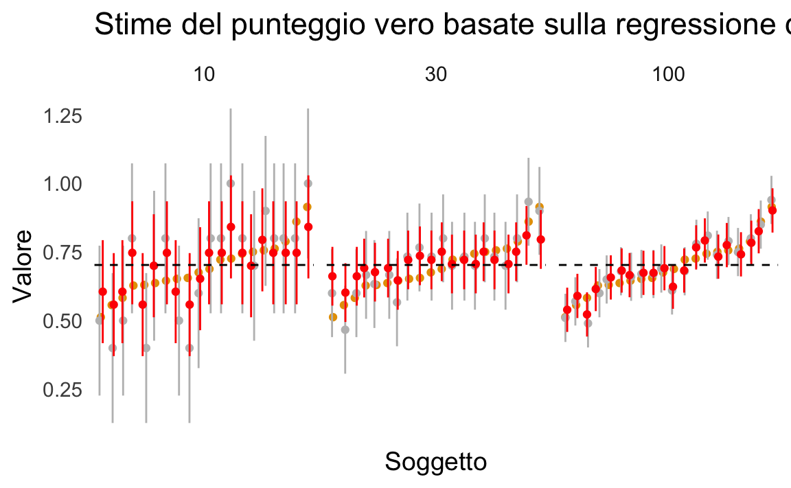

13 Applicazioni della CTT
Preparazione del Notebook
13.1 Introduzione
In questo capitolo vengono esplorate alcune tra le più importanti applicazioni della CTT, con particolare attenzione alle implicazioni operative che derivano dalla sua struttura teorica di base. Il percorso che seguiremo tocca diversi aspetti fondamentali:
Affidabilità e lunghezza del test. Verrà mostrato come stimare il numero di item necessari per ottenere un certo livello di affidabilità, grazie all’impiego di formule specifiche (ad esempio, l’adattamento della formula di Spearman-Brown). Questo consente di progettare strumenti di misura calibrati sulle esigenze di precisione richieste.
Attenuazione della correlazione. Illustreremo il fenomeno per cui l’errore di misurazione “nasconde” o riduce la vera correlazione tra due variabili, analizzando i metodi proposti per “disattenuare” tale correlazione (ad esempio, la formula di correzione in funzione dell’affidabilità).
Stima dei punteggi veri a livello individuale. Saranno presentate le procedure per migliorare l’accuratezza dei punteggi osservati, in particolare mediante la regressione di Kelley, che permette di avvicinare i punteggi individuali alla media di gruppo in proporzione all’affidabilità del test.
Modelli gerarchici bayesiani. Concluderemo evidenziando come l’approccio classico possa essere esteso o rivisto in un’ottica pienamente probabilistica attraverso modelli gerarchici bayesiani, che offrono una naturale interpretazione “shrinkante” degli stessi concetti, senza necessitare di un coefficiente di affidabilità calcolato a priori.
Nel complesso, lo scopo di questo capitolo è fornire una visione articolata su come la CTT, con i suoi strumenti e le sue formule, possa guidare non solo la costruzione e la valutazione di un test, ma anche l’interpretazione dei dati ottenuti. Al tempo stesso, il richiamo all’approccio bayesiano evidenzia come molte procedure classiche trovino un corrispettivo in modelli moderni, sottolineando la continuità tra i due paradigmi.
13.2 Stimare un Cambiamento Clinicamente Significativo
Un tema fondamentale in psicologia clinica è stabilire se un individuo abbia effettivamente manifestato un cambiamento clinicamente significativo nel tempo. I metodi per valutarlo rientrano per lo più in due categorie: i metodi “basati su ancoraggi” e quelli “basati sulla distribuzione” (Blampied, 2022).
-
Metodi basati su ancoraggi. Stabiliscono che un cambiamento clinicamente significativo debba corrispondere a un evento o a un segnale “clinicamente rilevante” esterno allo strumento di misura. In altre parole, invece di concentrarsi solo su quanti punti sono cambiati in una scala, questi metodi pongono l’accento sulla qualità di quel cambiamento: la variazione di punteggio deve essere associata a un miglioramento (o peggioramento) tangibile nello stato clinico del paziente, tale da essere riconosciuto come rilevante dal punto di vista clinico o terapeutico.
Esempio pratico.
Supponiamo di valutare l’efficacia di una psicoterapia per la depressione. Un ricercatore vuole stabilire se i pazienti hanno ottenuto un “cambiamento clinicamente significativo” nel loro stato depressivo, misurato con un questionario standard (ad es. un punteggio su una scala da 0 a 60).Definizione dell’ancoraggio clinico
Si sceglie come ancora il fatto che un paziente non soddisfi più i criteri clinici per la diagnosi di depressione secondo un colloquio diagnostico strutturato (es. MINI, SCID). Questo “evento” costituisce un passaggio riconosciuto come clinicamente rilevante.Collegamento fra scala e ancoraggio
Il passo successivo è stabilire quale differenza di punteggio sul questionario corrisponda tipicamente a questa transizione “da depresso a non depresso”. Ad esempio, attraverso dati esistenti o nuove analisi, si individua che la maggior parte dei pazienti che escono dalla diagnosi presenta una riduzione di almeno 10 punti sulla scala.Soglia di significatività
Il ricercatore definisce dunque come “clinicamente significativo” un miglioramento di 10 o più punti sul questionario, purché sia coerente con il superamento della soglia diagnostica. In questo modo, la variazione osservata non è solo una questione di numeri, bensì è “ancorata” a un cambiamento concreto: il passaggio effettivo dallo stato di diagnosi di depressione allo stato di remissione clinica.
Grazie a questo collegamento, l’approccio basato su ancoraggi permette di interpretare la variazione dei punteggi alla luce di uno scenario clinico reale e tangibile.
-
Metodi basati sulla distribuzione. Utilizzano gli indici di errore di misurazione per stabilire se la variazione del punteggio sia sufficientemente grande da non poter essere spiegata dal solo errore. Uno dei primi e più noti metodi di questo tipo è il Reliable Change Index (RCI), introdotto da Jacobson e Truax. Alla base dell’RCI vi è l’errore standard della differenza (SED), a sua volta derivato dall’errore standard di misura (SEM). Come abbiamo discusso, quest’ultimo si ottiene dalla seguente formula:
\[ SEM = s_x \sqrt{1 - r_{xx'}}, \]
dove \(s_x\) è la deviazione standard dei punteggi al pre-test e \(r_{xx'}\) l’affidabilità dello strumento. Se la variazione osservata nel punteggio di un individuo supera l’errore di misurazione intrinseco, si può concludere che il cambiamento sia clinicamente significativo e non soltanto frutto della variabilità casuale legata alla misura.
13.2.1 Calcolo del Reliable Change Index
La logica dell’RCI si basa su una suddivisione di qualunque punteggio osservato (\(X\)) in due componenti: il punteggio vero (\(T\)) e un errore di misurazione (\(E\)):
\[ X = T \pm E. \]
Se una persona subisce un vero cambiamento tra due tempi di osservazione (\(t1\) e \(t2\)), ciò dovrebbe riflettersi in una differenza fra i relativi punteggi veri. Tuttavia, la presenza dell’errore di misurazione rende possibile osservare differenze anche in assenza di un mutamento reale. Di conseguenza, occorre stabilire quanto debba essere ampio un cambiamento per poterlo definire genuino e non dovuto a fluttuazioni casuali.
Jacobson e Truax (1991), riprendendo concetti introdotti da Jacobson e colleghi (1984), sfruttarono la distribuzione degli errori di misurazione (che ha media zero e varianza pari al \(SEM^2\)) per definire un indice che quantifica l’entità di un cambiamento in termini di unità di errore standard.
13.2.2 Calcolo della differenza tra punteggi e distribuzione di errore
Il modo più diretto per rilevare un cambiamento consiste nel calcolare il punteggio di differenza (o change score) tra due tempi di misura:
\[ C_i = X_{t1} - X_{t2}, \tag{13.1}\]
dove \(C_i\) rappresenta il cambiamento per l’individuo \(i\). Poiché ogni punteggio osservato comprende una componente di errore, il punteggio di differenza conterrà anche l’errore combinato delle due misurazioni (si veda la discussione precedente sull’affidabilità dei punteggi differenza).
La distribuzione di questi errori di differenza ha anch’essa media zero, ma una deviazione standard più grande, chiamata deviazione standard della differenza (\(SD_{Diff}\)). Per due misure indipendenti o non correlate dal punto di vista dell’errore, essa è data da:
\[ SD_{Diff} = \sqrt{2 \cdot SEM^2}. \tag{13.2}\]
Questo nasce dalla proprietà secondo cui la varianza della differenza fra due variabili indipendenti si ottiene sommando le loro varianze. Anche se i punteggi veri al pre- e post- possono essere correlati (perché appartengono alla stessa persona), si assume in psicometria che gli errori di misurazione siano indipendenti fra loro.
13.2.3 Definizione dell’RCI
Una volta calcolati il punteggio di differenza \(C_i\) e la sua deviazione standard \(SD_{Diff}\), l’RCI è semplicemente il punteggio di differenza standardizzato:
\[ C_i(\text{Standardized}) = \frac{C_i}{SD_{Diff}}. \tag{13.3}\]
Analogamente a uno z-score, l’RCI indica di quante unità di errore standard differisce il cambiamento osservato dal valore zero (che corrisponderebbe a nessun cambiamento reale). Più alto è l’RCI in valore assoluto, più ci si può ragionevolmente aspettare che la variazione misurata rifletta un mutamento vero e non solo un artefatto della misura.
Un RCI che superi una determinata soglia (spesso ±1.96 per p < .05) suggerisce un cambiamento talmente ampio da poter essere considerato clinicamente significativo, cioè non spiegabile interamente dall’errore di misurazione.
13.2.4 Esempio in R
# Simulazione di dati psicologici
set.seed(123) # Per replicabilità
dati <- data.frame(
ID = 1:100, # 100 partecipanti
t1 = rnorm(100, mean = 25, sd = 5), # Punteggi al tempo 1
t2 = rnorm(100, mean = 23, sd = 5) # Punteggi al tempo 2
)
# Supponiamo che l'affidabilità del test sia nota
reliability <- 0.85 # Esempio di coefficiente di affidabilità
sd_test <- 5 # Deviazione standard della misura# Calcolo dell'errore standard di misura (SEM)
SEM <- sd_test * sqrt(1 - reliability)# Calcolo della deviazione standard della differenza tra le due misure
SD_Diff <- sqrt(2 * SEM^2)# Calcolo del punteggio di differenza
dati$Change_Score <- dati$t1 - dati$t2# Calcolo dell'RCI per ciascun individuo
dati$RCI <- dati$Change_Score / SD_Diff# Identificare i cambiamenti clinicamente significativi (soglia ±1.96)
dati$Significativo <- abs(dati$RCI) > 1.96
# Mostrare i primi risultati
head(dati)
#> ID t1 t2 Change_Score RCI Significativo
#> 1 1 22.20 19.45 2.7497 1.004 FALSE
#> 2 2 23.85 24.28 -0.4353 -0.159 FALSE
#> 3 3 32.79 21.77 11.0270 4.026 TRUE
#> 4 4 25.35 21.26 4.0903 1.494 FALSE
#> 5 5 25.65 18.24 7.4045 2.704 TRUE
#> 6 6 33.58 22.77 10.8005 3.944 TRUE# Visualizzazione dei RCI
ggplot(dati, aes(x = RCI)) +
geom_histogram(
binwidth = 0.5,
fill = "blue",
alpha = 0.5,
color = "black"
) +
geom_vline(
xintercept = c(-1.96, 1.96),
linetype = "dashed",
color = "red"
) +
labs(
title = "Distribuzione dell'RCI",
x = "Reliable Change Index",
y = "Frequenza"
)13.3 Affidabilità e Lunghezza del Test
Un modo per determinare quanti item servano a raggiungere un dato livello di affidabilità è sfruttare la formula di Spearman-Brown, adattandola per calcolare la lunghezza del test desiderata. Nel caso di un item medio con affidabilità stimata \(\rho_1\) e di un test esteso il cui obiettivo è raggiungere l’affidabilità complessiva \(\rho_p\), la formula che restituisce il numero di item \(p\) necessari è:
\[ p = \frac{\rho_p (1 - \rho_1)}{\rho_1 (1 - \rho_p)}. \tag{13.4}\]
13.3.1 Esempio in R
Supponiamo, per esempio, che un test composto da 5 item abbia un’affidabilità di 0.824 e che \(\rho_1\) (affidabilità dell’item medio) sia pari a 0.479. Se desideriamo raggiungere un’affidabilità complessiva \(\rho_p\) di 0.95, applicando l’Equazione eq-spearman-brown-number-items si ottiene un valore di \(p\) di circa 21 item. In altre parole, servirebbe un totale di 21 item per raggiungere una stima di affidabilità pari a 0.95.
# Esempio di calcolo in R
rho_1 <- 0.479
desired_rho <- 0.95
n_items_needed <- (desired_rho * (1 - rho_1)) / (rho_1 * (1 - desired_rho))
n_items_needed
#> [1] 20.6713.4 Attenuazione
13.4.1 Attenuazione e Correlazioni Disattenuate
Un fenomeno importante nell’analisi statistica è l’attenuazione, ovvero la riduzione della correlazione osservata fra due variabili dovuta alla presenza di errore di misurazione in una o entrambe le scale. Se l’errore di misurazione è elevato, la correlazione empirica tende a essere sottostimata rispetto a quella vera, dando luogo al cosiddetto effetto di attenuazione.
Come discusso da Lord & Novick (1968), quando si creano scale di misura per rappresentare due costrutti e si vuole valutarne la relazione, l’errore incluso in ciascuna scala fa sì che la correlazione osservata sia inferiore alla correlazione vera fra i costrutti. Per stimare questa correlazione vera (o latente), si applicano formule di correzione per l’attenuazione che sfruttano i coefficienti di affidabilità delle due misure.
Se \(X\) e \(Y\) sono i punteggi osservati e \(T_X\) e \(T_Y\) i punteggi veri di due costrutti, la correlazione disattenuata tra i punteggi veri si calcola come:
\[ \rho(T_X, T_Y) = \frac{\rho_{XY}}{\sqrt{\rho_{XX^\prime} \,\rho_{YY^\prime}}}, \tag{2} \]
dove \(\rho_{XY}\) è la correlazione osservata tra \(X\) e \(Y\), mentre \(\rho_{XX^\prime}\) e \(\rho_{YY^\prime}\) sono le affidabilità delle due scale.
Allo stesso modo, se si desidera la correlazione tra i punteggi osservati di un test \(X\) e i punteggi veri di un secondo test \(T_Y\), la formula è:
\[ \rho(X, T_Y) = \frac{\rho_{XY}}{\sqrt{\rho_{YY^\prime}}}. \tag{3} \]
Queste formule, radicate nella Teoria Classica dei Test (CTT), permettono di “risalire” a quanto due costrutti latenti siano effettivamente correlati, depurando il contributo dell’errore di misurazione.
Per dimostrare la formula della correlazione disattenuata, ci basiamo sulla Teoria Classica dei Test (CTT), che postula che ogni punteggio osservato \(X\) e \(Y\) è la somma del rispettivo punteggio vero \(T_X\) e \(T_Y\) e di un errore casuale \(E_X\) e \(E_Y\):
\[ X = T_X + E_X , \] \[ Y = T_Y + E_Y , \]
dove si assume che:
- \(E_X\) e \(E_Y\) siano indipendenti dai punteggi veri \(T_X\) e \(T_Y\);
- gli errori abbiano media zero e varianza finita;
- la correlazione tra i punteggi veri è quella che vogliamo stimare.
Passo 1: Definizione della Correlazione Osservata.
La correlazione tra i punteggi osservati \(X\) e \(Y\) è:
\[ \rho_{XY} = \frac{\text{Cov}(X, Y)}{\sigma_X \sigma_Y}. \]
Sostituendo \(X = T_X + E_X\) e \(Y = T_Y + E_Y\):
\[ \text{Cov}(X, Y) = \text{Cov}(T_X + E_X, T_Y + E_Y). \]
Espandiamo la covarianza:
\[ \text{Cov}(X, Y) = \text{Cov}(T_X, T_Y) + \text{Cov}(T_X, E_Y) + \text{Cov}(E_X, T_Y) + \text{Cov}(E_X, E_Y). \]
Poiché gli errori sono indipendenti dai punteggi veri, le covarianze miste si annullano:
\[ \text{Cov}(X, Y) = \text{Cov}(T_X, T_Y). \]
Quindi,
\[ \rho_{XY} = \frac{\text{Cov}(T_X, T_Y)}{\sigma_X \sigma_Y}. \]
Passo 2: Relazione tra la Varianza Osservata e la Varianza Vera.
La varianza dei punteggi osservati è:
\[ \sigma_X^2 = \sigma_{T_X}^2 + \sigma_{E_X}^2. \]
La affidabilità \(\rho_{XX'}\) è definita come la proporzione della varianza del punteggio vero sulla varianza osservata:
\[ \rho_{XX'} = \frac{\sigma_{T_X}^2}{\sigma_X^2}. \]
Analogamente,
\[ \rho_{YY'} = \frac{\sigma_{T_Y}^2}{\sigma_Y^2}. \]
Dunque, la deviazione standard dei punteggi veri può essere scritta in funzione della deviazione standard osservata e dell’affidabilità:
\[ \sigma_{T_X} = \sigma_X \sqrt{\rho_{XX'}}, \quad \sigma_{T_Y} = \sigma_Y \sqrt{\rho_{YY'}}. \]
Passo 3: Espressione della Correlazione Vera.
Sostituendo nella formula della correlazione:
\[ \rho_{T_X T_Y} = \frac{\text{Cov}(T_X, T_Y)}{\sigma_{T_X} \sigma_{T_Y}}. \]
Sostituendo la covarianza già calcolata:
\[ \rho_{T_X T_Y} = \frac{\rho_{XY} \sigma_X \sigma_Y}{\sigma_{T_X} \sigma_{T_Y}}. \]
Ora sostituiamo \(\sigma_{T_X} = \sigma_X \sqrt{\rho_{XX'}}\) e \(\sigma_{T_Y} = \sigma_Y \sqrt{\rho_{YY'}}\):
\[ \rho_{T_X T_Y} = \frac{\rho_{XY} \sigma_X \sigma_Y}{\sigma_X \sqrt{\rho_{XX'}} \cdot \sigma_Y \sqrt{\rho_{YY'}}}. \]
Semplificando,
\[ \rho_{T_X T_Y} = \frac{\rho_{XY}}{\sqrt{\rho_{XX'} \rho_{YY'}}}. \]
Questa è la formula della correlazione disattenuata.
13.4.1.1 Intervalli di confidenza per la correlazione corretta
Il calcolo degli intervalli di confidenza per la correlazione disattenuata richiede qualche cautela: un approccio comune è applicare la formula di disattenuazione agli estremi dell’intervallo di confidenza della correlazione osservata, consapevoli che tale procedura è approssimativa. In pratica, si stima l’intervallo di confidenza della correlazione osservata e se ne calcola una versione “corretta” sostituendo in formula i valori limite dell’intervallo.
Ad esempio, si consideri un caso in cui la correlazione osservata \(\rho_{XY} = 0.50\), con affidabilità \(\rho_{XX^\prime} = 0.70\) e \(\rho_{YY^\prime} = 0.80\). Applicando la formula \((2)\), la correlazione disattenuata è:
r_osservata <- 0.5
rho_X <- 0.7
rho_Y <- 0.8
r_corretta <- r_osservata / sqrt(rho_X * rho_Y)
r_corretta
#> [1] 0.6682Se l’intervallo di confidenza della correlazione osservata andasse, ad esempio, da 0.40 a 0.60, si otterrebbero due estremi per la correlazione corretta applicando la stessa operazione:
CI_lower_observed <- 0.4
CI_upper_observed <- 0.6
CI_lower_corrected <- CI_lower_observed / sqrt(rho_X * rho_Y)
CI_upper_corrected <- CI_upper_observed / sqrt(rho_X * rho_Y)
cat(
"Intervallo di confidenza corretto: da",
CI_lower_corrected, "a", CI_upper_corrected
)
#> Intervallo di confidenza corretto: da 0.5345 a 0.8018È importante sottolineare che, sebbene questa procedura offra una stima veloce dei limiti di confidenza disattenuati, non costituisce un metodo pienamente rigoroso per calcolare l’incertezza attorno alle correlazioni latenti.
13.4.1.2 Esempio classico di Spearman
L’utilizzo delle correlazioni disattenuate risale a Spearman (1904), il quale evidenziò come la correlazione empirica tra una misura di discriminazione dell’altezza del suono (\(X\)) e l’intelligenza valutata dall’insegnante (\(Y\)) fosse pari a \(\hat{\rho}_{XY} = 0.38\). Notando che le due misure avevano affidabilità basse (\(\hat{\rho}_{XX'} = 0.25\) e \(\hat{\rho}_{YY'} = 0.55\)), Spearman corresse la correlazione per l’attenuazione, ottenendo addirittura un valore di poco superiore a 1. Questo esempio evidenzia un limite ben noto: la formula di disattenuazione, se applicata a stime di affidabilità troppo basse o a correlazioni molto elevate, può dare risultati paradossali (correlazioni > 1).
Già all’epoca, ciò innescò un vivace dibattito con Pearson, il quale non accettò l’idea di “quantità non osservabili” e restò scettico verso una correlazione superiore a 1. Ciononostante, Spearman proseguì i suoi studi, contribuendo in maniera determinante allo sviluppo dell’analisi fattoriale e mostrando come spesso le correlazioni disattenuate si avvicinassero all’unità nel caso di variabili fortemente collegate allo stesso fenomeno.
McDonald (1999) sottolinea l’importanza di un uso cauto di queste correlazioni corrette, suggerendo che i modelli di equazioni strutturali (SEM) forniscono stime più robuste, in quanto permettono di modellare direttamente le variabili latenti senza dover ricorrere a correzioni ex post.
13.5 Usare l’Affidabilità per Migliorare l’Inferenza a Livello Individuale
Un altro uso cruciale dell’affidabilità è il miglioramento delle stime dei punteggi veri di ciascun individuo, come abbiamo visto nel sec-ctt-true-score-estimate.
13.5.1 Legami con gli stimatori di James-Stein, i Modelli Multilivello e l’Analisi Bayesiana
Le equazioni di Kelley (1921) anticipano di molti anni i principi alla base degli stimatori di James-Stein, che prevedono anch’essi un aggiustamento delle stime individuali verso la media del gruppo per ottenere stime più accurate. Questo principio trova un parallelo nei modelli multilivello, che trattano i punteggi individuali come derivanti da una distribuzione di gruppo, attenuando le stime soggettive sulla base dell’incertezza associata.
In un’ottica bayesiana, se si assume che i punteggi veri seguano una distribuzione a priori (ad esempio, una normale centrata sulla media del campione), la media a posteriori coincide con la stima di Kelley (de Gruijter & van der Kamp, 2008). Questo suggerisce un forte legame concettuale tra la psicometria classica e l’inferenza bayesiana, mostrando come l’informazione di gruppo possa migliorare la stima dei punteggi individuali.
In pratica, lo stesso principio viene sfruttato nei modelli multilivello, implementabili ad esempio con il pacchetto lme4 in R o tramite modelli bayesiani gerarchici con brms o rstanarm. Questi approcci riducono l’errore di stima dei singoli soggetti integrando informazioni sull’intero gruppo, analogamente alla regressione di Kelley, ma con maggiore flessibilità e rigore probabilistico.
13.5.2 Simulazione: Stima dei Punteggi Veri con Pooling
Per illustrare concretamente l’effetto del pooling verso la media, riportiamo un esempio in R, ispirato al codice di Nathaniel Haines. La simulazione genera dati per 20 soggetti con probabilità di successo media di 0.7, variando il numero di item (10, 30, 100) per osservare come cambia l’affidabilità (e di conseguenza la stima dei punteggi veri).
set.seed(43202)
# Numero di soggetti e di item
n_subj <- 20
n_items <- c(10, 30, 100)
# Campione casuale di punteggi veri intorno a 0.7
theta <- rnorm(n_subj, .7, .1)
# Funzione per stimare l'errore standard di misura (al quadrato)
est_se2 <- function(x) {
p <- mean(x)
q <- 1 - p
n <- length(x)
# Varianza dell'errore per item binari
sig2_ep_i <- (p * q) / (n - 1)
sig2_ep_i
}
# Simulazione
dis_dat <- foreach(i = seq_along(n_items), .combine = "rbind") %do% {
# Genera dati osservati (binari) per ciascun soggetto
X_all <- foreach(t = seq_along(theta), .combine = "rbind") %do% {
rbinom(n_items[i], 1, prob = theta[t])
}
# Media di gruppo
X_bar <- mean(rowMeans(X_all))
# Calcolo dell'affidabilità
X <- rowMeans(X_all)
sig2_ep <- mean(apply(X_all, 1, est_se2))
sig2_X <- var(X)
rho <- 1 - (sig2_ep / sig2_X)
# Stima dei punteggi veri secondo la formula di Kelley
foreach(t = seq_along(theta), .combine = "rbind") %do% {
X_i <- mean(X_all[t, ])
data.frame(
subj_num = t,
n_items = n_items[i],
theta = theta[t],
rho = rho,
X = X_i,
se_obs = sd(X) * sqrt(1 - rho),
se_hat = sd(X) * sqrt(1 - rho) * sqrt(rho),
theta_hat = (1 - rho) * X_bar + rho * X_i
)
}
}
# Visualizzazione
dis_dat %>%
mutate(subj_num = reorder(subj_num, theta)) %>%
ggplot(aes(x = subj_num, y = theta)) +
geom_point() +
geom_point(aes(y = X),
color = "gray",
position = position_jitter(width = .2, height = 0, seed = 1)
) +
geom_linerange(
aes(ymin = X - 1.96 * se_obs, ymax = X + 1.96 * se_obs),
color = "gray",
position = position_jitter(width = .2, height = 0, seed = 1)
) +
geom_point(aes(y = theta_hat),
color = "red",
position = position_jitter(width = .2, height = 0, seed = 2)
) +
geom_linerange(
aes(ymin = theta_hat - 1.96 * se_hat, ymax = theta_hat + 1.96 * se_hat),
color = "red",
position = position_jitter(width = .2, height = 0, seed = 2)
) +
geom_hline(yintercept = mean(dis_dat$X), linetype = 2, color = "black") +
facet_wrap(~n_items, nrow = 1) +
ggtitle("Stime del punteggio vero basate sulla regressione di Kelley") +
xlab("Soggetto") +
ylab("Valore") +
theme_minimal(base_size = 14) +
theme(
panel.grid = element_blank(),
axis.text.x.bottom = element_blank()
)
Tre aspetti principali emergono da questo esempio:
- Le stime puntuali ottenute tramite la formula di Kelley (\(\hat{T}\)) si trovano sempre più vicine alla media del gruppo rispetto ai punteggi osservati.
- L’effetto di pooling è tanto più marcato quanto più bassa è l’affidabilità. Nel codice, la manipolazione dell’affidabilità avviene variando il numero di item.
- Gli intervalli di confidenza attorno a \(\hat{T}\) risultano più stretti rispetto agli IC dei punteggi osservati, confermando come la stima di Kelley riduca l’incertezza legata all’errore di misurazione.
Questa simulazione evidenzia la stretta relazione tra la regressione di Kelley e i modelli bayesiani gerarchici. Infatti, la regressione di Kelley corrisponde alla media a posteriori di un modello bayesiano gerarchico normale con priori non informativi. In un modello multilivello bayesiano, i punteggi veri sono stimati utilizzando una distribuzione di gruppo, proprio come nella psicometria classica, ma con il vantaggio di una gestione probabilistica più raffinata e di intervalli di credibilità per le stime individuali.
In sintesi, l’approccio di Kelley trova una corrispondenza diretta nei moderni metodi bayesiani e multilivello, poiché tutti questi approcci condividono il principio della regressione verso la media per contrastare l’errore di misurazione. La differenza principale è che, nell’approccio bayesiano, la stima dell’errore di misurazione e la correzione verso la media avvengono in modo integrato, senza la necessità di calcolare separatamente un coefficiente di affidabilità. Questo rende il metodo bayesiano più generale e flessibile, consentendo l’applicazione a scenari più complessi e la possibilità di incorporare informazioni a priori nelle stime.
13.6 Riflessioni Conclusive
In questo capitolo, abbiamo approfondito le principali applicazioni della Teoria Classica dei Test (CTT), analizzando sia gli aspetti teorici sia le implicazioni pratiche nella misurazione psicologica. In particolare, abbiamo:
- Esaminato il problema dell’attenuazione, dimostrando come l’errore di misurazione possa ridurre artificialmente la correlazione tra costrutti psicologici e influenzare l’interpretazione dei risultati.
- Analizzato la formula di Spearman-Brown, strumento essenziale per stimare il numero di item necessario a garantire un livello desiderato di affidabilità, mettendo in evidenza il ruolo strategico della progettazione dei test.
- Confrontato diversi metodi per stimare i punteggi veri individuali, includendo la regressione di Kelley, radicata nei principi della CTT, e l’approccio bayesiano gerarchico, che estende questi concetti in un quadro probabilistico più generale.
La CTT rappresenta una base essenziale per la costruzione e valutazione dei test psicometrici, fornendo strumenti chiari e affidabili per la progettazione e l’interpretazione dei risultati. Tuttavia, il parallelo con i modelli bayesiani e multilivello suggerisce che molti principi classici—come la regressione verso la media e la correzione dell’errore di misurazione—trovano una naturale estensione in approcci più avanzati, capaci di integrare l’incertezza e sfruttare al meglio l’informazione disponibile.
La comprensione di questi concetti è fondamentale per:
- Progettare strumenti di misura con un livello di affidabilità adeguato agli obiettivi della ricerca o della pratica psicologica.
- Evitare distorsioni nelle stime delle relazioni tra variabili, grazie a una corretta gestione dell’errore di misurazione e delle procedure di attenuazione.
- Migliorare l’inferenza sui punteggi veri, adottando approcci statistici appropriati che bilancino precisione e robustezza.
La CTT, pur rimanendo un fondamento imprescindibile per la psicometria, si integra oggi con metodologie più sofisticate—come la Teoria della Risposta all’Item (IRT) e i modelli di equazioni strutturali—che permettono di migliorare ulteriormente la qualità e la flessibilità delle misurazioni. L’evoluzione verso strumenti più avanzati consente di affinare la precisione delle valutazioni, con benefici concreti sia nella ricerca che nelle applicazioni cliniche e diagnostiche.
13.7 Session Info
sessionInfo()
#> R version 4.4.2 (2024-10-31)
#> Platform: aarch64-apple-darwin20
#> Running under: macOS Sequoia 15.3.2
#>
#> Matrix products: default
#> BLAS: /Library/Frameworks/R.framework/Versions/4.4-arm64/Resources/lib/libRblas.0.dylib
#> LAPACK: /Library/Frameworks/R.framework/Versions/4.4-arm64/Resources/lib/libRlapack.dylib; LAPACK version 3.12.0
#>
#> locale:
#> [1] C/UTF-8/C/C/C/C
#>
#> time zone: Europe/Rome
#> tzcode source: internal
#>
#> attached base packages:
#> [1] parallel stats graphics grDevices utils datasets methods
#> [8] base
#>
#> other attached packages:
#> [1] doParallel_1.0.17 iterators_1.0.14 cmdstanr_0.8.1
#> [4] truncnorm_1.0-9 ggridges_0.5.6 foreach_1.5.2
#> [7] modelsummary_2.3.0 ggokabeito_0.1.0 see_0.11.0
#> [10] MASS_7.3-65 viridis_0.6.5 viridisLite_0.4.2
#> [13] ggpubr_0.6.0 ggExtra_0.10.1 gridExtra_2.3
#> [16] patchwork_1.3.0 bayesplot_1.11.1 semTools_0.5-6
#> [19] semPlot_1.1.6 lavaan_0.6-19 psych_2.4.12
#> [22] scales_1.3.0 markdown_1.13 knitr_1.50
#> [25] lubridate_1.9.4 forcats_1.0.0 stringr_1.5.1
#> [28] dplyr_1.1.4 purrr_1.0.4 readr_2.1.5
#> [31] tidyr_1.3.1 tibble_3.2.1 ggplot2_3.5.1
#> [34] tidyverse_2.0.0 here_1.0.1
#>
#> loaded via a namespace (and not attached):
#> [1] tensorA_0.36.2.1 rstudioapi_0.17.1 jsonlite_1.9.1
#> [4] magrittr_2.0.3 TH.data_1.1-3 estimability_1.5.1
#> [7] farver_2.1.2 nloptr_2.2.1 rmarkdown_2.29
#> [10] vctrs_0.6.5 minqa_1.2.8 base64enc_0.1-3
#> [13] rstatix_0.7.2 htmltools_0.5.8.1 distributional_0.5.0
#> [16] broom_1.0.7 Formula_1.2-5 htmlwidgets_1.6.4
#> [19] plyr_1.8.9 sandwich_3.1-1 emmeans_1.10.7
#> [22] zoo_1.8-13 igraph_2.1.4 mime_0.13
#> [25] lifecycle_1.0.4 pkgconfig_2.0.3 Matrix_1.7-3
#> [28] R6_2.6.1 fastmap_1.2.0 rbibutils_2.3
#> [31] shiny_1.10.0 digest_0.6.37 OpenMx_2.21.13
#> [34] fdrtool_1.2.18 colorspace_2.1-1 ps_1.9.0
#> [37] rprojroot_2.0.4 Hmisc_5.2-3 labeling_0.4.3
#> [40] timechange_0.3.0 abind_1.4-8 compiler_4.4.2
#> [43] withr_3.0.2 glasso_1.11 htmlTable_2.4.3
#> [46] backports_1.5.0 carData_3.0-5 ggsignif_0.6.4
#> [49] corpcor_1.6.10 gtools_3.9.5 tools_4.4.2
#> [52] pbivnorm_0.6.0 foreign_0.8-88 zip_2.3.2
#> [55] httpuv_1.6.15 nnet_7.3-20 glue_1.8.0
#> [58] quadprog_1.5-8 nlme_3.1-167 promises_1.3.2
#> [61] lisrelToR_0.3 grid_4.4.2 checkmate_2.3.2
#> [64] cluster_2.1.8.1 reshape2_1.4.4 generics_0.1.3
#> [67] gtable_0.3.6 tzdb_0.5.0 data.table_1.17.0
#> [70] hms_1.1.3 car_3.1-3 tables_0.9.31
#> [73] sem_3.1-16 pillar_1.10.1 rockchalk_1.8.157
#> [76] posterior_1.6.1 later_1.4.1 splines_4.4.2
#> [79] lattice_0.22-6 survival_3.8-3 kutils_1.73
#> [82] tidyselect_1.2.1 miniUI_0.1.1.1 pbapply_1.7-2
#> [85] reformulas_0.4.0 stats4_4.4.2 xfun_0.51
#> [88] qgraph_1.9.8 arm_1.14-4 stringi_1.8.4
#> [91] pacman_0.5.1 boot_1.3-31 evaluate_1.0.3
#> [94] codetools_0.2-20 mi_1.1 cli_3.6.4
#> [97] RcppParallel_5.1.10 rpart_4.1.24 xtable_1.8-4
#> [100] Rdpack_2.6.3 processx_3.8.6 munsell_0.5.1
#> [103] Rcpp_1.0.14 coda_0.19-4.1 png_0.1-8
#> [106] XML_3.99-0.18 jpeg_0.1-10 lme4_1.1-36
#> [109] mvtnorm_1.3-3 openxlsx_4.2.8 rlang_1.1.5
#> [112] multcomp_1.4-28 mnormt_2.1.1